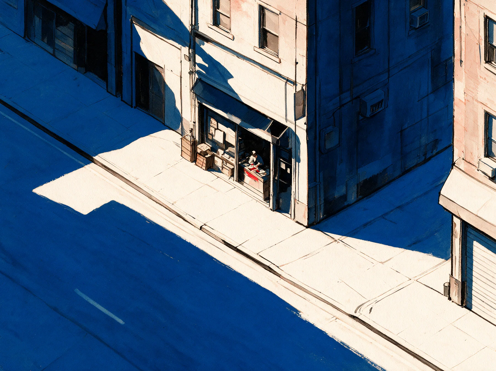
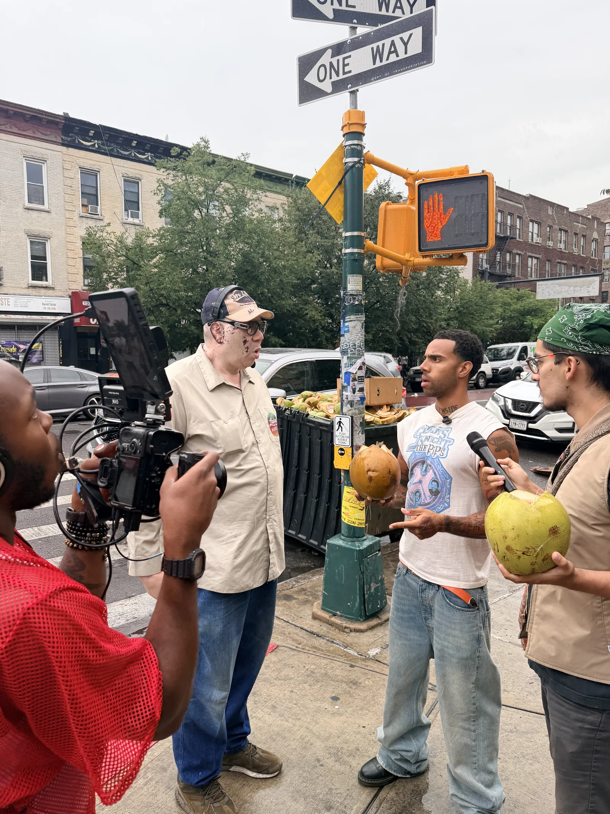
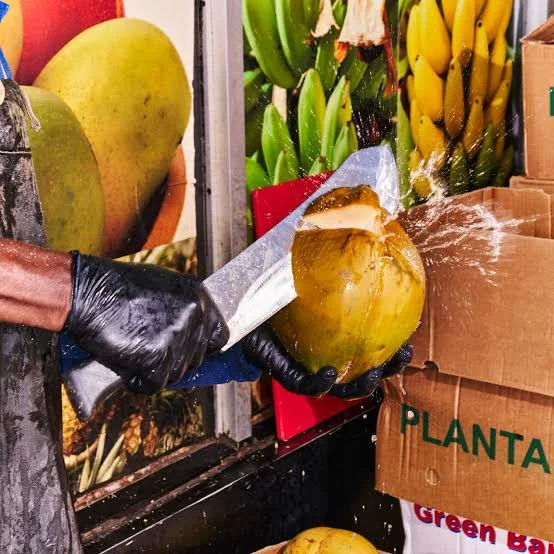
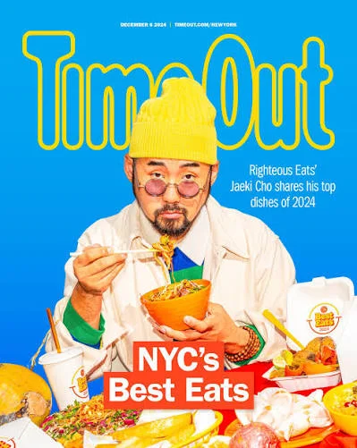

The kids don’t want the store. They want the brand.
Read the thought
Squarespace header (hidden)


Attention Demand Revenue
STIR builds the content, strategy and systems that turn attention into demand — and demand into revenue.
01 — Attention
02 / Thesis
They need something worth talking about.
The interesting part is usually already there. We find it, build the story around it, put it in front of the right people and give them a reason to act.
10M+
Organic views
We didn’t invent Labay’s story. We built the system that helped more people see it.



The attention turned into brand partnerships — Nike, Red Bull and TurboTax came to the market.
Also in the system · Kemoy Martin · MarcoEatsWorld · Nicolas Nuvan · + more
04 / What we do
We make the work, put it in front of the right people and build the system that turns their attention into business. More calls. More orders. More bookings. More customers.
05 / What you leave with
You leave with a sharper reason for people to care, the work that communicates it, and a system for getting it in front of them.
01
The angle
What should people care about?
Positioning, offer, insight, creative direction.
02
The work
What do they need to see?
Identity, campaigns, content, photography, video, websites.
03
The system
How does attention become business?
Distribution, launches, paid media, sales infrastructure, conversion.
Brand. Content. Campaigns. Web. Distribution. Sales. Whatever the idea requires.
06 / Observation

There’s probably something inside your business people would care about. Let’s find it.
Tell us about the business